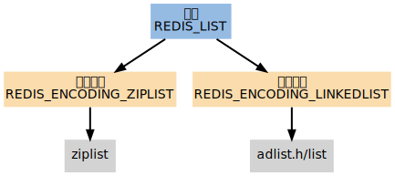
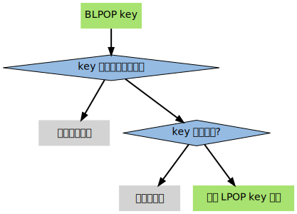
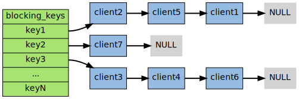
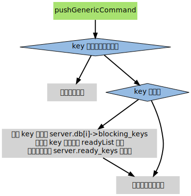
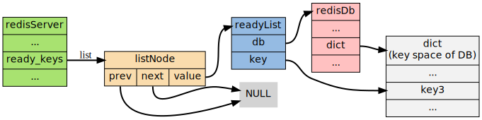

列表
REDIS_LIST 列表 是 LPUSH , LRANGE 等命令的操作对象， 它使用 REDIS_ENCODING_ZIPLIST 和 REDIS_ENCODING_LINKEDLIST 这两种方式编码：

编码
创建新列表时 Redis 默认使用 REDIS_ENCODING_ZIPLIST 编码， 当以下任意一个条件被满足时， 列表会被转换成 REDIS_ENCODING_LINKEDLIST 编码：
- 试图往列表新添加一个 字符串值 ，且这个字符串的长度超过 server.list_max_ziplist_value （默认值为 64 ）
- ziplist 包含的节点超过 server.list_max_ziplist_entries （默认值为 512 ）

命令
因为两种底层实现的抽象方式和列表的抽象方式非常接近， 所以列表命令几乎就是通过一对一地映射到底层数据结构的操作来实现的 既然这些映射都非常直观， 这里就不做赘述了
在以下的内容中， 将焦点放在 BLPOP , BRPOP 和 BRPOPLPUSH 这个几个 阻塞 命令的实现原理上
阻塞
条件
BLPOP , BRPOP 和 BRPOPLPUSH 三个命令都可能造成 *客户端被阻塞*， 以下将这些命令统称为 列表的阻塞原语 。阻塞原语并不一定会造成客户端阻塞：
- 只有当这些命令被用于 空列表 时， 它们才会阻塞客户端
- 如果被处理的列表不为空的话， 它们就执行无阻塞版本的 LPOP 、 RPOP 或 RPOPLPUSH 命令
作为例子，以下流程图展示了 BLPOP 决定是否对客户端进行阻塞过程：
过程
阻塞一个客户端需要执行以下步骤：
- 将 客户端的状态 设为 *正在阻塞*，并记录阻塞这个 客户端的各个键 ，以及阻塞的最长时限 timeout 等数据
- 将客户端的信息记录到 server.db[i]->blocking_keys 中（其中 i 为 客户端所使用的数据库号码 ）
- 继续 维持 客户端和服务器之间的 网络连接 ，但 不再向 客户端传送任何信息，造成客户端阻塞
步骤 2 是将来解除阻塞的关键， server.db[i]->blocking_keys 是一个 字典 ：
- 字典的键：那些造成客户端阻塞的键
- 字典的值：一个链表， 链表里保存了所有因为这个键而被阻塞的客户端 （被同一个键所阻塞的客户端可能不止一个）

在上图展示的 例子中， client2 、 client5 和 client1 三个客户端就正被 key1 阻塞 而其他几个客户端也正在被别的两个 key 阻塞
当客户端被阻塞之后，脱离阻塞状态有以下三种方法：
- 被动 脱离：有其他客户端为造成阻塞的键推入了新元素
- 主动 脱离：到达执行阻塞原语时设定的最大阻塞时间
- 强制 脱离：客户端强制终止和服务器的连接，或者服务器停机
取消
通过将新元素推入造成客户端阻塞的某个键中， 可以让相应的客户端从阻塞状态中脱离出来 （取消阻塞的客户端数量取决于推入元素的数量）。LPUSH 、 RPUSH 和 LINSERT 这三个添加新元素到列表的命令， 在底层都由一个 pushGenericCommand 的函数实现， 这个函数的运作流程如下图：

当向一个空键推入新元素时， pushGenericCommand 函数执行以下两件事：
- 检查这个键是否存在于前面提到的 server.db[i]->blocking_keys 字典里：
- 如果是的话， 那么说明有至少一个客户端因为这个 key 而被阻塞，程序会为这个键 创建 一个 redis.h/readyList 结构， 并将它 添加 到 server.ready_keys 链表中
- 将给定的值添加到列表键中
readyList 结构的定义如下：
typedef struct readyList { redisDb *db; robj *key; } readyList;
- key 属性指向 造成阻塞的键
- db 则指向 该键所在的数据库
举个例子， 假设某个非阻塞客户端正在使用 \(0\) 号数据库， 而这个数据库当前的 blocking_keys 属性的值如下：
如果这时客户端对该数据库执行 PUSH key3 value ， 那么 pushGenericCommand 将创建一个 db 属性指向 \(0\) 号数据库、 key 属性指向 key3 键对象的 readyList 结构 ， 并将它添加到服务器 server.ready_keys 属性的链表中：

到目前为止， pushGenericCommand 函数完成了以下两件事：
- 将 readyList 添加到服务器
- 将新元素 value 添加到键 key3
虽然 key3 已经不再是空键， 但到目前为止， 被 key3 阻塞的客户端还没有任何一个被解除阻塞状态
为了做到这一点， Redis 的主进程在执行完 pushGenericCommand 函数之后， 会继续调用 handleClientsBlockedOnLists 函数， 这个函数执行以下操作：
- 如果 server.ready_keys 不为空，那么弹出该链表的表头元素，并取出元素中的 readyList 值
- 根据 readyList 值所保存的 key 和 db ，在 server.blocking_keys 中查找所有因为 key 而被阻塞的客户端（以链表的形式保存）
- 如果 key 不为空，那么从 key 中弹出一个元素，并弹出客户端链表的第一个客户端，然后将被弹出元素返回给被弹出客户端作为阻塞原语的返回值
- 根据 readyList 结构的属性，删除 server.blocking_keys 中相应的客户端数据，取消客户端的阻塞状态
- 继续执行步骤 3 和 4 ，直到 key 没有元素可弹出，或者所有因为 key 而阻塞的客户端都取消阻塞为止
继续执行步骤 1 ，直到 ready_keys 链表里的所有 readyList 结构都被处理完为止
用一段伪代码描述以上操作可能会更直观一些：
def handleClientsBlockedOnLists(): # 执行直到 ready_keys 为空 while server.ready_keys != NULL: # 弹出链表中的第一个 readyList rl = server.ready_keys.pop_first_node() # 遍历所有因为这个键而被阻塞的客户端 for client in all_client_blocking_by_key(rl.key, rl.db): # 只要还有客户端被这个键阻塞，就一直从键中弹出元素 # 如果被阻塞客户端执行的是 BLPOP ，那么对键执行 LPOP # 如果执行的是 BRPOP ，那么对键执行 RPOP element = rl.key.pop_element() if element == NULL: # 键为空，跳出 for 循环 # 余下的未解除阻塞的客户端只能等待下次新元素的进入了 break else: # 清除客户端的阻塞信息 server.blocking_keys.remove_blocking_info(client) # 将元素返回给客户端，脱离阻塞状态 client.reply_list_item(element)
策略
值得一提的是：
- 当程序添加一个新的被阻塞客户端到 server.blocking_keys 字典的链表中时， 它将该客户端放在链表的最后
- 当 handleClientsBlockedOnLists 取消客户端的阻塞时， 它从链表的最前面开始取消阻塞
这个链表形成了一个 FIFO 队列， 最先被阻塞的客户端总是最先脱离阻塞状态， Redis 文档称这种模式为 先阻塞先服务 FBFS(first-block-first-serve) 。举个例子，在下图所示的阻塞状况中：
- 如果客户端对数据库执行 PUSH key3 value ， 那么只有 client3 会被取消阻塞， client6 和 client4 仍然阻塞
- 如果客户端对数据库执行 PUSH key3 value1 value2 ， 那么 client3 和 client4 的阻塞都会被取消， 而客户端 client6 依然处于阻塞状态
超时
当客户端被阻塞时， 所有造成它阻塞的键， 以及阻塞的最长时限会被记录， 并且该客户端的状态会被设置为“正在阻塞”
每次 Redis 服务器常规操作函数 server cron job 执行时， 程序都会检查所有连接到服务器的客户端， 查看那些处于“正在阻塞”状态的客户端的最大阻塞时限是否已经 过期 ， 如果是的话， 就给客户端返回一个空白回复， 然后撤销对客户端的阻塞。可以用一段伪代码来描述这个过程：
def server_cron_job(): # 其他操作 ... # 遍历所有已连接客户端 for client in server.all_connected_client: # 如果客户端状态为“正在阻塞”，并且最大阻塞时限已到达 if client.state == BLOCKING and client.max_blocking_timestamp < current_timestamp(): # 那么给客户端发送空回复,脱离阻塞状态 client.send_empty_reply() # 并清除客户端在服务器上的阻塞信息 server.blocking_keys.remove_blocking_info(client) # 其他操作 ...
| Next：集合 | Previous：哈希表 | Home：数据类型 |